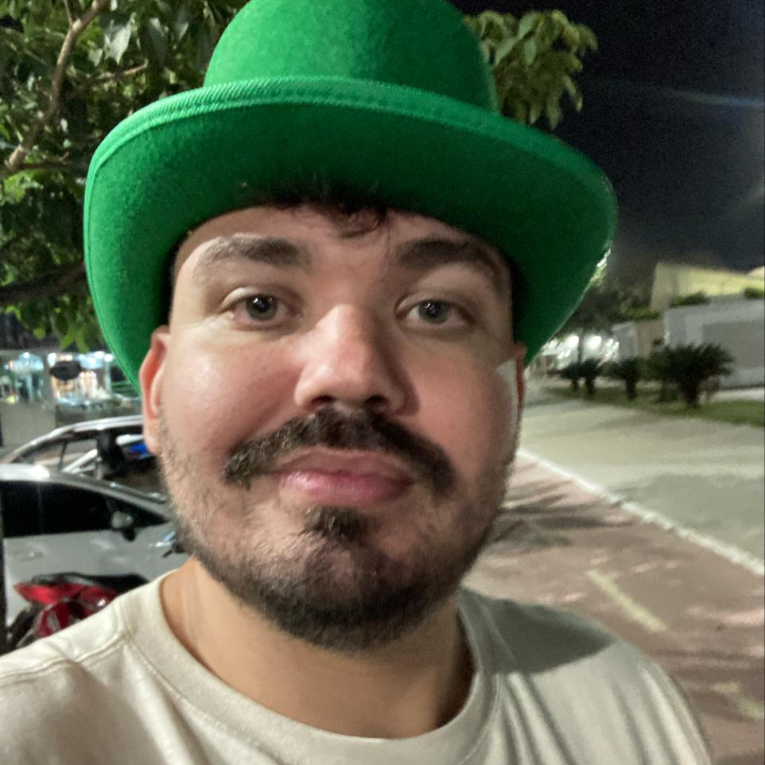

OI! Eu sou o Evaldo
Tenho 32 anos e moro em Guaparari - ES.
Faço parte da equipe de TV local há algum tempo e agora estou fazendo uma trassição de carreira para area de TI.
Sou geek amante de tecnologia que adora animes e jogos. Estou cursando Ciência da Computação na Universidade Estácio de Sá e descobrindo o maravilhoso mundo da programação em Java (Back-end) na Alura, graças ao projeto ONE (Oracle Next Education).
